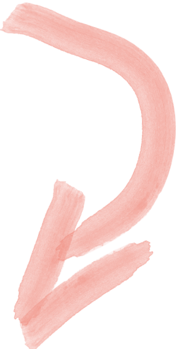

Ich entwickle ständig neue Ideen, forme sie wöchentlich zu Konzepten und stricke daraus kleine und große Projekte. Manche für Kunden, manche für Mich. Das kann ich sehr gut und das erfüllt mich mit Leidenschaft. Jede gute Idee ist es Wert angegangen zu werden.
Adam Siwy

Adam André Siwy ∞ Ich bin Versatilist und Macher, der als Medieninformatiker von der winzigen Projektidee bis zur Strategischen Beratung zwischen den Disziplinen plant, koordiniert und abwickelt. Nichts passiert von alleine – aus diesem Grund reifen Ideen zu Projekten und Erfahrung zu Fachwissen. Wenn es spannendes zu tun gibt, kommen wir ins Gespräch.